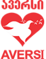
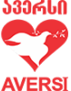

ძებნა:
ძებნა:

 ძებნა:
ძებნა:
კომპანია „ავერსი“ 1994 წლის 14 ნოემბერს დაარსდა. დამფუძნებლის ინიციატივით, მის სახელწოდებად იმთავითვე იქნა შერჩეული ლათინური სიტყვა, რომლის მნიშვნელობაც ყველაზე უკეთ შეესატყვისებოდა კომპანიის განვითარების პრინციპს - უწყვეტ და თანაბარზომიერ განვითარებას, სპირალურ წინსვლას.
„ავერსის“ მთავარი საზრუნავი მომხმარებლის ჯანმრთელობა და უსაფრთხოებაა, რასაც საუკეთესოდ გამოხატავს კომპანიის სლოგანი: „გისურვებთ ჯანმრთელობას და სულიერ სიმშვიდეს!“
სლოგანს ეხმიანება „ავერსის“ ლოგოტიპიც - წითელი გული, რომელზეც გამოსახულია თეთრი მტრედი ზეთისხილის რტოთი.
წითლისა და თეთრის სიმბოლიკას ისტორიული ფესვები აქვს. ამ ფერებს ჯერ კიდევ შუა საუკუნეებში, ჯვაროსნული ომების ეპოქაში, იყენებდნენ ტამპლიერებისა და ჰოსპიტალიერების რაინდული ორდენები, რომლებიც ზრუნავდნენ ავადმყოფებზე, უსახლკაროებსა და ობლებზე, იცავდნენ წმინდა ადგილების მოსალოცად მიმავალ მორწმუნეთა უსაფრთხოებას. წითელი ჯვრის საერთაშორისო ორგანიზაცია მსოფლიომ სწორედ თეთრ ფონზე გამოსახული წითელი ჯვრით გაიცნო. დროთა განმავლობაში ამ ემბლემის შინაარსი გაფართოვდა და განსაცდელში ჩავარდნილთა უანგარო დახმარების სიმბოლოდ იქცა.
უძველეს კულტურებში წითელი სიბრძნესა და სასიცოცხლო ენერგიას განასახიერებდა, თეთრი კი სიწმინდესა და კეთილშობილებას.
გულიც, როგორც ადამიანის მთავარი ორგანო, სიცოცხლესა და ჯანმრთელობას გამოხატავს. მტრედი ჯერ კიდევ ბიბლიური ეპოქიდან მიიჩნევა მშვიდობის სიმბოლოდ, ხოლო ზეთისხილის რტო, რომელიც ასევე ბიბლიური ეპოქიდან იღებს სათავეს, სიცოცხლისა და ღმერთთან შერიგების გამომხატველია.
ყველა ამ მნიშვნელობას სრულყოფილად იტევს „ავერსის“ ემბლემა - მასაც ხომ, როგორც ბიბლიურ მტრედს, თავისი საქმიანობით სიმშვიდე და ჯანმრთელობა მოაქვს ადამიანებისთვის.

გაუადვილოს ადამიანებს საკუთარ და სხვების ჯანმრთელობაზე ზრუნვა - ასეთი მისია დაუსახა „ავერსმა“ საკუთარ თავს. სწორედ ამ მიზნისკენ არის მიმართული მისი მრავალმხრივი საქმიანობის სპექტრი, მათ შორის - უწყვეტი რეგიონული გაფართოება და საქართველოს ყველა ქალაქში ახალი ტიპის აფთიაქების გახსნა. ამ მიზნის რეალიზებას ხელს უწყობს ისიც, რომ „ავერსის“ პროდუქცია და სერვისები მაქსიმალურად ხელმისაწვდომია და უმთავრესად დაბალი და საშუალო შემოსავლის მქონე მომხმარებელზეა გათვლილი.
დღიდან დაარსებისა, კომპანიის ერთ-ერთი პრიორიტეტია ფარმაცევტების პროფესიული ზრდა და სერვისის მუდმივი გაუმჯობესება როგორც მომსახურების, ისე მომხმარებლის ინფორმირების კუთხით.
მომხმარებლის მეტ კომფორტს ისახავს მიზნად Online სერვისების დანერგვა და გაფართოება.
ყოველივე ამასთან ერთად, „ავერსი“ ცდილობს, აღადგინოს მივიწყებული ტრადიცია და ფარმაციის სფეროში დააბრუნოს მამაკაცები. ამის დასტურია ის, რომ კომპანიის ყველა აფთიაქში თითო ფარმაცევტი მამაკაცი მაინც არის დასაქმებული.
ხარისხიანი პროდუქცია და მომსახურება ავერსის ძირითადი ღირებულებებია.
ფარმაცევტული კომპანია “ავერსი” 1994 წელს დაარსდა. მან საქართველოში 10 000-ზე მეტი სამუშაო ადგილი შექმნა და ხარისხიანი მომსახურების მტკიცე სტანდარტი დაამკვიდრა.
“ავერსმა” დაარსებისთანავე დაიწყო საქართველოში მედიკამენტების პირდაპირი კონტაქტებით შემოტანა, შესაბამისად, მედიკამენტების ხარისხიც მაქსიმალურად გარანტირებულია და ფასიც – შედარებით დაბალი.
"ავერსის" პარტნიორები მსოფლიოს წამყვანი ფარმაცევტული კომპანიები არიან.
მედიკამენტები ყველასთვის ხელმისაწვდომი რომ იყოს, “ავერსში” მედიკამენტების სხვადასხვა ფასით წარმოდგენილი ანალოგების – ე.წ. “ჯენერიკების” ფართო არჩევანია, რომლებიც უცხოურ ანალოგებისგან მხოლოდ ფასით განსხვავდება და არა ხარისხით.
“ავერსში” უმთავრესი პრიორიტეტი მომსახურების მაღალი ხარისხი გახლავთ. აფთიაქებში ფარმაცევტების მუშაობის ხარისხს და მათ პროფესიულ ზრდას დიდი ყურადღება ექცევა.
ფირმაში არსებობს უწყვეტი სწავლების პროცესი – ყოველკვირეული სემინარებისა და ტესტირებების დამსახურებით ფარმაცევტები კვალიფიკაციას მუდმივად იმაღლებენ. ამ შეხვედრებზე ფარმაცევტები ისმენენ ინფორმაციას სხვადასხვა ბრენდის მედიკამენტების შესახებ. ფარმაცევტებს უტარდებათ სემინარები და ტრენინგები მომსახურების საკითხებზეც.
ფირმას ჰყავს რეგიონალური მენეჯერების გუნდი, რომელიც სისტემატურად ამოწმებს აფთიაქებში სანიტარულ-ფარმაცევტულ წესრიგს. ასევე ფირმას აქვს “ფარული მომხმარებლის” სამსახური, რომლის საშუალებითაც სისტემატურად ხორციელდება აფთიაქების სამუშაო პროცესის და მომსახურების დონის მონიტორინგი.
საკადრო პოლიტიკის მნიშვნელოვანი ნაწილია თანამშრომელთა მოტივაცია და ამისათვის არსებული მუდმივი შეფასების მრავალკომპონენტიანი სისტემა, რომელიც ითვლისწინებს ცოდნისა და პროფესიონალიზმის გამოვლენის უმნიშვნელოვანეს დეტალსაც კი.
“ავერსი” არაერთ სოციალურ პროექტს ახორციელებს, რომელთა უმრავლესობა ეროვნული მნიშვნელობისაა.
კომპანია დაარსების დღიდან ზრუნავს მზრუნველობამოკლებულ ბავშვთა და მოხუცებულთა თავშესაფრების ბენეფიციარებზე და განუწყვეტლივ ამარაგებს მათ საჭირო მედიკამენტებით.
შ.პ.ს. ,,ავერსი-ფარმა” სპონსორობას უწევს შემდეგ პროექტებს:
1. საბავშვო მუსიკალური პროექტი "ანა-ბანა";
2. მუსიკალური პროექტი "მხოლოდ ქართული";
3. ბათუმის ჯაზ ფესტივალი;
და აგრეთვე მრავალ სოციალურ თუ საგანმანათლებლო პროქტებს.
“ავერსი” როგორც ქველმოქმედი, წარმატებული და ცნობადი ბრენდი არაერთი მადლობის ფურცლის, სიგელისა და სერტიფიკატის მფლობელია.
2001 წელს “ავერსის” დამფუძნებელს და გენერალურ დირექტორს პაატა კურტანიძეს დედაქალაქის წარჩინებული ბიზნესმენის და საქართველოს წარჩინებული ბიზნესმენის წოდება მიენიჭა.
2003-2008 წლებში, “ჯორჯიან თაიმსის” ბიზნესრეიტინგის მიხედვით, “ავერსმა” ზედიზედ დაიმსახურა წლის საუკეთესო კომპანიის წოდება როგორც ქველმოქმედმა, მაღალი სოციალური პასუხისმგებლობის მქონე და საუკეთესო მენეჯმენტის განმახორციელებელმა კომპანიამ.
2004 წლის 27 იანვარს მადრიდში ასოციაცია BID-მა “ავერსი-ფარმას” ოქროს ვარსკვლავის ხარისხის საერთაშორისო სერტიფიკატი მიანიჭა.
2004 წლის 17 დეკემბერს ქართული ხარისხის ნიშანი მიენიჭა შპს “ავერსს”, შპს “ავერსი-ფარმას” და შპს “ავერსი გეოფარმს”.
2005 წელს “ავერსმა” მიიღო ალმანახ "სახე(ლ)ების" ჯილდო ნომინაციაში “მაღალი სოციალური პასუხისმგებლობის მქონე კომპანია”.

 
